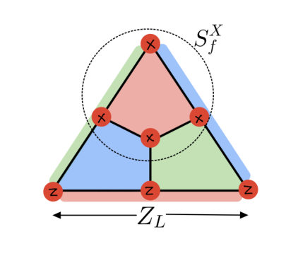
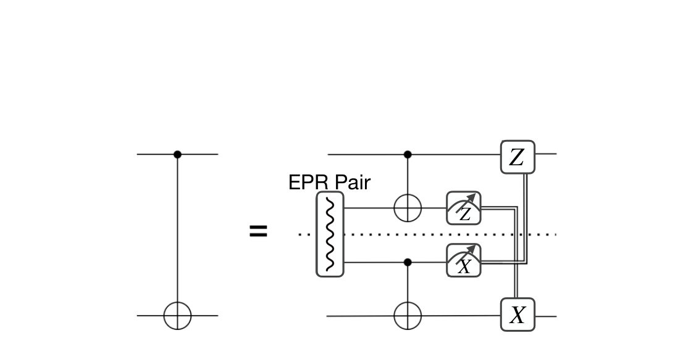
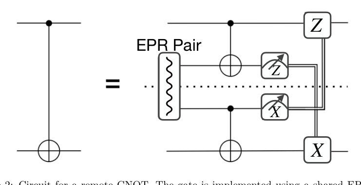
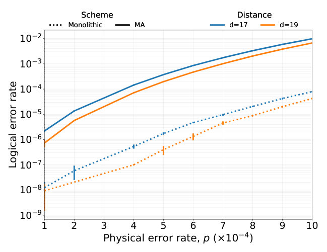
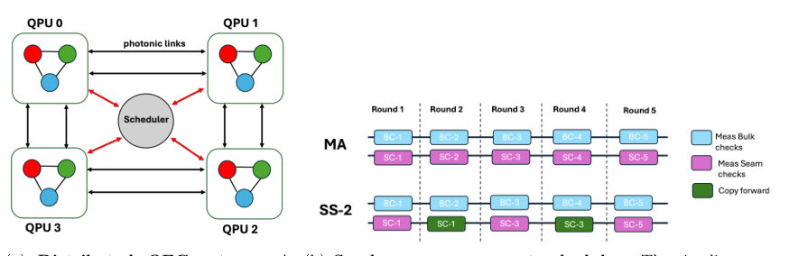
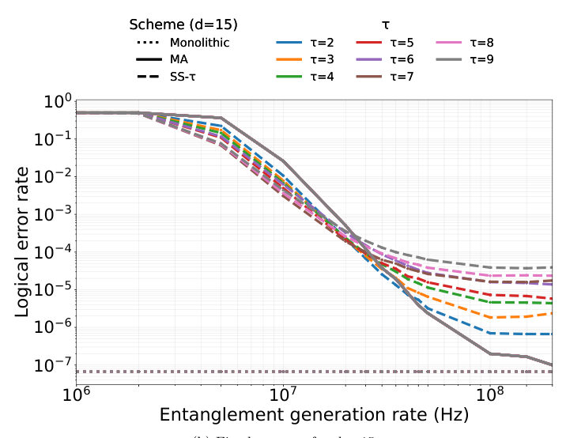
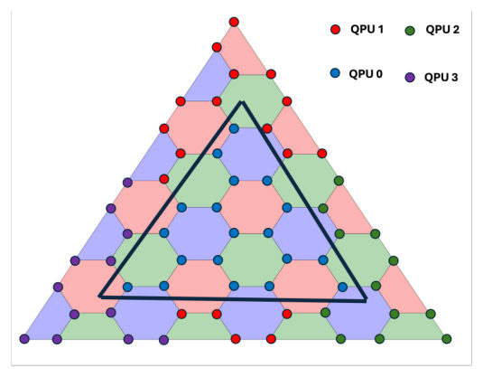
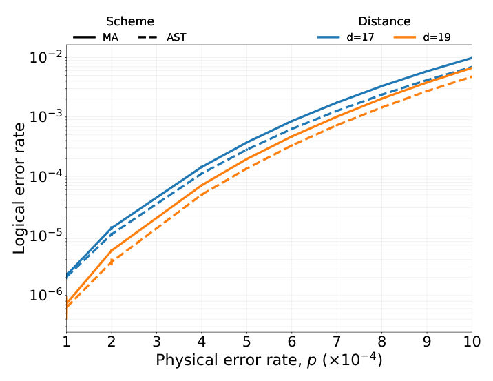

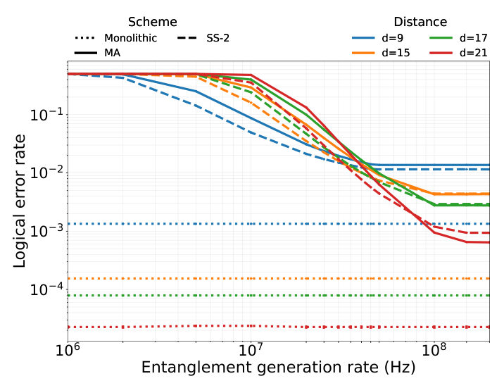
81 papers · 49 relevant · 2 highlighted
Every paper with at least one nonzero topic score, sorted by best-matching score. 🔥 marks scores ≥3/5. Click the title to jump to the full entry below; click [arXiv] to open the paper page. (secondary) marks papers from de-prioritized cond-mat archives.
measurement-induced transitions 5/5 · 🔥 entanglement & information structure 4/5 · 🔥 driven-dissipative phase transition 3/5 · 🔥 non-equilibrium dynamics 3/5 · 🔥 non-equilibrium universality 3/5 · correlated / nonlocal dissipation 2/5 · dissipative systems 2/5 · methods for driven-dissipative 2/5 · quantum measurements 2/5Rydberg arrays 5/5 · 🔥 analog quantum simulation 4/5 · 🔥 exotic spin models in light-matter 4/5 · 🔥 QC/QI experiment 3/5 · entanglement & information structure 2/5 · non-equilibrium dynamics 2/5 · quantum measurements 2/5dissipative systems 4/5 · 🔥 entanglement & information structure 4/5 · 🔥 driven-dissipative phase transition 3/5 · correlated / nonlocal dissipation 2/5 · methods for driven-dissipative 2/5 · non-equilibrium dynamics 2/5 · non-equilibrium universality 2/5dissipative systems 4/5 · 🔥 correlated / nonlocal dissipation 3/5 · 🔥 entanglement & information structure 3/5 · Tavis-Cummings & cavity-many-emitter 2/5 · methods for driven-dissipative 2/5 · non-equilibrium dynamics 2/5 · quantum measurements 2/5analog quantum simulation 4/5 · 🔥 Rydberg arrays 3/5 · 🔥 exotic spin models in light-matter 3/5 · 🔥 non-equilibrium dynamics 3/5 · entanglement & information structure 2/5 · scars & prethermalization 2/5methods for driven-dissipative 4/5 · 🔥 dissipative systems 3/5 · 🔥 entanglement & information structure 3/5 · correlated / nonlocal dissipation 2/5 · measurement-induced transitions 2/5 · quantum measurements 2/5dissipative systems 4/5 · 🔥 non-equilibrium dynamics 4/5 · 🔥 Keldysh / 2PI / non-Gaussian methods 3/5 · 🔥 non-equilibrium universality 3/5 · methods for driven-dissipative 2/5dissipative systems 4/5 · 🔥 methods for driven-dissipative 4/5 · 🔥 Kondo & dissipative impurity 3/5 · 🔥 non-equilibrium dynamics 3/5 · entanglement & information structure 2/5dissipative systems 4/5 · 🔥 Keldysh / 2PI / non-Gaussian methods 3/5 · 🔥 non-equilibrium dynamics 3/5 · correlated / nonlocal dissipation 2/5 · methods for driven-dissipative 2/5methods for driven-dissipative 4/5 · 🔥 Keldysh / 2PI / non-Gaussian methods 3/5 · 🔥 dissipative systems 3/5 · 🔥 non-equilibrium dynamics 3/5dissipative systems 4/5 · 🔥 entanglement & information structure 3/5 · correlated / nonlocal dissipation 2/5 · methods for driven-dissipative 2/5 · non-equilibrium dynamics 2/5spintronics-quantum-optics interface 4/5 · 🔥 correlated / nonlocal dissipation 3/5 · 🔥 dissipative systems 3/5 · quantum measurements 2/5quantum measurements 4/5 · 🔥 dissipative systems 3/5 · 🔥 non-equilibrium dynamics 3/5 · methods for driven-dissipative 2/5dissipative systems 4/5 · 🔥 non-equilibrium dynamics 3/5 · correlated / nonlocal dissipation 2/5 · methods for driven-dissipative 2/5dissipative systems 4/5 · 🔥 methods for driven-dissipative 4/5 · non-equilibrium dynamics 2/5QC/QI experiment 4/5 · dissipative systems 2/5 · quantum optics experiment 2/5non-equilibrium dynamics 4/5 · analog quantum simulation 2/5 · non-equilibrium universality 2/5Tavis-Cummings & cavity-many-emitter 4/5 · dissipative systems 2/5 · quantum measurements 2/5dissipative systems 4/5 · methods for driven-dissipative 2/5 · non-equilibrium dynamics 2/5quantum measurements 4/5 · entanglement & information structure 2/5QC/QI experiment 4/5(secondary) — 🔥 QC/QI experiment 4/5(secondary) — 🔥 dissipative systems 3/5 · 🔥 non-equilibrium dynamics 3/5 · correlated / nonlocal dissipation 2/5 · driven-dissipative phase transition 2/5 · methods for driven-dissipative 2/5 · non-equilibrium universality 2/5driven-dissipative phase transition 3/5 · 🔥 non-equilibrium dynamics 3/5 · 🔥 non-equilibrium universality 3/5 · dissipative systems 2/5 · methods for driven-dissipative 2/5driven-dissipative phase transition 3/5 · 🔥 non-equilibrium universality 3/5 · Keldysh / 2PI / non-Gaussian methods 2/5 · dissipative systems 2/5 · non-equilibrium dynamics 2/5dissipative systems 3/5 · entanglement & information structure 2/5 · methods for driven-dissipative 2/5 · non-equilibrium dynamics 2/5 · quantum measurements 2/5(secondary) — 🔥 non-equilibrium dynamics 3/5 · Keldysh / 2PI / non-Gaussian methods 2/5 · dissipative systems 2/5 · methods for driven-dissipative 2/5non-equilibrium dynamics 3/5 · correlated cavity matter 2/5 · driven-dissipative phase transition 2/5 · non-equilibrium universality 2/5entanglement & information structure 3/5 · dissipative systems 2/5 · quantum measurements 2/5entanglement & information structure 3/5 · dissipative systems 2/5quantum measurements 3/5 · analog quantum simulation 2/5QC/QI experiment 3/5entanglement & information structure 3/5Keldysh / 2PI / non-Gaussian methods 2/5 · dissipative systems 2/5 · methods for driven-dissipative 2/5 · non-equilibrium dynamics 2/5dissipative systems 2/5 · entanglement & information structure 2/5 · quantum measurements 1/5(secondary) — analog quantum simulation 2/5 · non-equilibrium dynamics 2/5methods for driven-dissipative 2/5 · non-equilibrium dynamics 2/5entanglement & information structure 2/5 · quantum measurements 2/5correlated cavity matter 2/5(secondary) — spintronics-quantum-optics interface 2/5Keldysh / 2PI / non-Gaussian methods 2/5Keldysh / 2PI / non-Gaussian methods 2/5(secondary) — spintronics-quantum-optics interface 2/5spintronics-quantum-optics interface 2/5(secondary) — Keldysh / 2PI / non-Gaussian methods 2/5(secondary) — spintronics-quantum-optics interface 2/5(secondary) — QC/QI experiment 2/5Keldysh / 2PI / non-Gaussian methods 2/5exotic spin models in light-matter 2/5Papers by authors on your watch list. Click the title to jump to the full entry below; click [arXiv] to open the paper page.
Papers from quant-ph and your primary cond-mat archives (quant-gas, stat-mech, str-el, dis-nn). Highlighted papers (⭐) come first, then everything else sorted by topic-relevance score, highest first.
← Index · ← Previous · Next →
Authors: I. N. Khoroshiy, A. Podlesnyak, D. Menzel, M. C. Rahn, D. S. Inosov, A. S. Sukhanov, S. E. Nikitin
Type: experiment · Category: strongly correlated electrons · PDF: https://arxiv.org/pdf/2604.21985v1
Analysis basis: full PDF text, analyzed in chunks
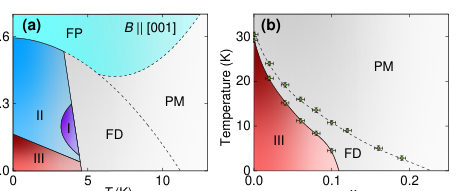
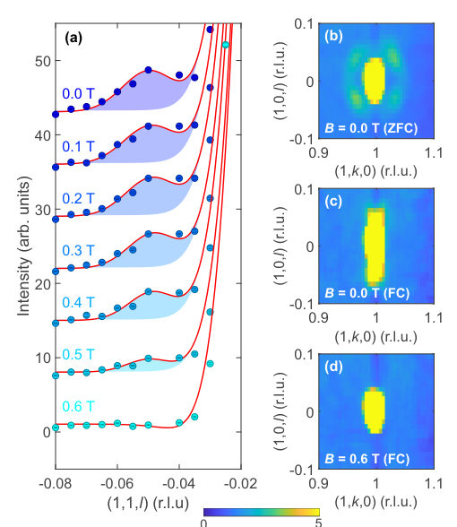
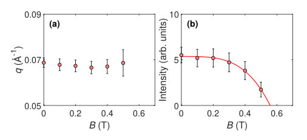
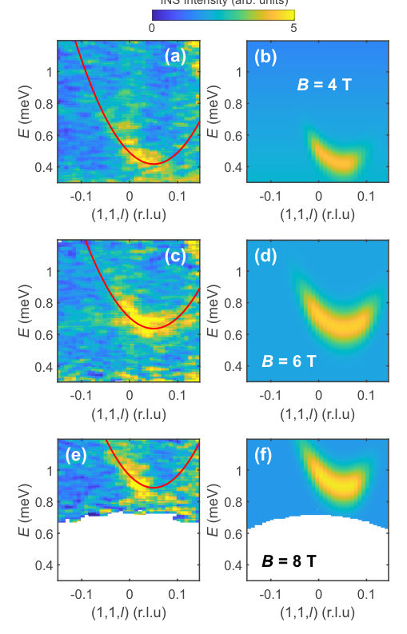
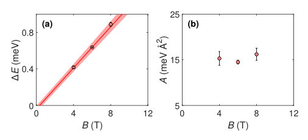
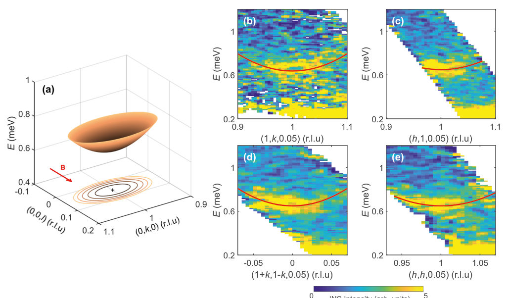
Main problem. The study aims to investigate the unexpected and pronounced anisotropy of spin-wave stiffness in the field-polarized phase of the cubic chiral magnet Fe-doped MnSi, which contradicts standard theoretical models.
Main result. The researchers discovered that spin-wave stiffness is highly anisotropic, with values significantly higher parallel to the applied field (14.7 meV A^2) than perpendicular to it (7.6 meV A^2), suggesting a need to revise current theoretical understandings of cubic chiral magnets.
Method. High-resolution inelastic and elastic neutron scattering measurements were performed using the Cold-neutron Chopper Spectrometer (CNCS) at the Spallation Neutron Source.
Summary. This paper reports the discovery of significant spin-wave stiffness anisotropy in the field-polarized phase of Fe-doped MnSi. While standard models for this cubic material predict isotropic spin-wave dispersion, experimental neutron scattering reveals that stiffness is nearly twice as large parallel to the magnetic field as it is perpendicular to it. The authors suggest that this unexpected behavior might be driven by the magnetic field inducing a symmetry reduction in the electronic Fermi surface. This finding challenges existing theoretical frameworks for chiral magnets and necessitates a re-evaluation of how magnetic interactions are modeled in these systems.
Model / system. The physical system is Fe-doped MnSi (Mn0.9Fe0.1Si), a B20-type itinerant chiral magnetic material, studied in its field-polarized ferromagnetic state.
Key observables. Spin-wave dispersion, spin-wave stiffness (A), magnetic propagation vector (km), energy gap (E), and magnetic reflection intensity.
Important parameters / regimes. Magnetic field (B), temperature (T ~ 1.8-2 K), Fe concentration (x), and critical field (Bc).
Assumptions / limitations. The authors rule out single-ion anisotropy, anisotropic exchange, and dipole-dipole interactions as the primary causes, instead speculating on symmetry reduction of the Fermi surface.
Figures summary. Fig 1 shows magnetic phase diagrams; Fig 2 displays magnetic reflection intensity and neutron scattering slices under different cooling protocols; Fig 3 shows the magnetic field dependence of the propagation vector and reflection intensity; Fig 6 compares extracted spin-wave stiffness values for different directions.
Paper structure. The paper introduces the problem of skyrmion-stabilizing interactions, describes the experimental setup and sample preparation, presents the neutron scattering results regarding spin-wave dispersion and anisotropy, evaluates potential physical mechanisms for the observed anisotropy, and concludes with implications for theory.
Chiral magnetic textures, such as skyrmions, are of great interest to the condensed matter community due to their novel transport properties. The stabilization of topologically non-trivial magnetic phases, like the skyrmion lattice in MnSi, is governed by underlying magnetic interactions which can be probed via measurements of spin-wave excitations. Here, we report high-resolution inelastic neutron scattering (INS) measurements of the spin waves in Fe-doped Mn$_{0.9}$Fe$_{0.1}$Si deep within its field-polarized ferromagnetic state. We observe non-reciprocal spin waves with a parabolic dispersion that shifts linearly with magnetic field. Crucially, the spin-wave stiffness is highly anisotropic, with values of 14.7 meV $\rm{\mathring{A}}@@MATH0MATH@@^2$ perpendicular to it. This pronounced anisotropy in a cubic material is inconsistent with standard theoretical models for MnSi and indicates a necessity to revise our theoretical understanding.
Authors: Luciano Loris Viteritti, Riccardo Rende, Christopher Roth, Anirvan Sengupta, Giuseppe Carleo, Antoine Georges
Type: theory · Category: strongly correlated electrons · PDF: https://arxiv.org/pdf/2604.21978v1
Analysis basis: full PDF text, analyzed in chunks
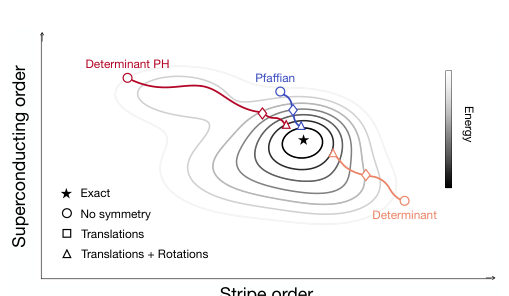
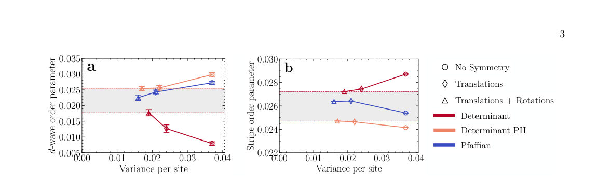
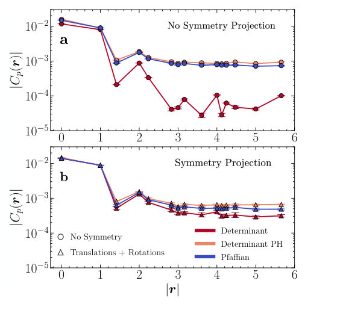
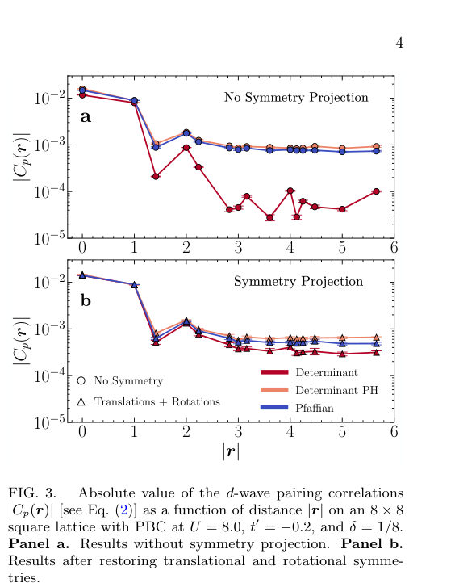
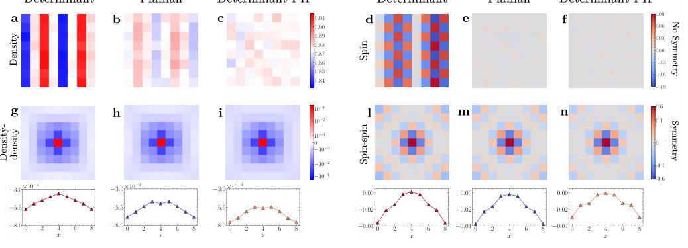
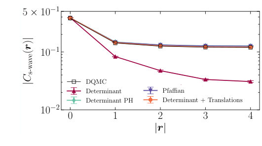
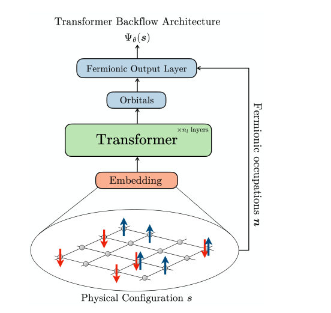
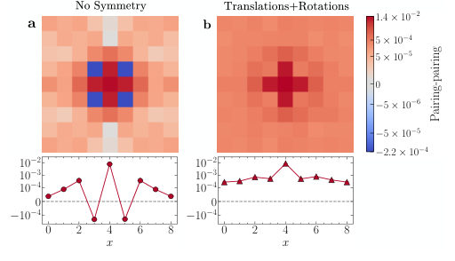
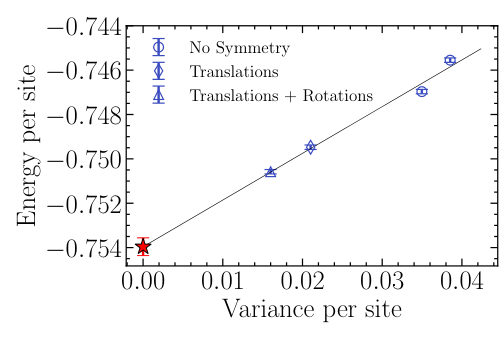
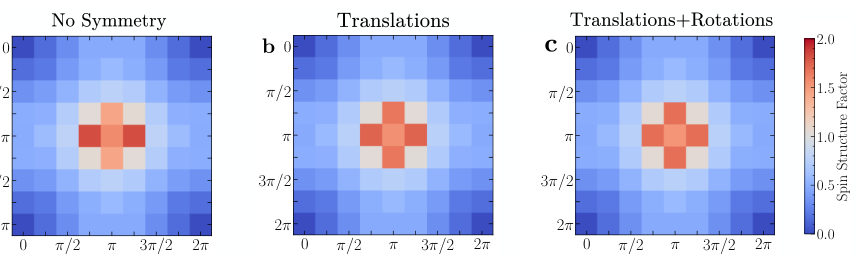
Main problem. Investigating how architectural bias in different variational ansätze leads to conflicting physical conclusions regarding competing orders in the Hubbard model.
Main result. By using symmetry restoration and variance reduction, three different neural-network ansätze (determinant, particle-hole, and Pfaffian) converge to a consistent physical picture of coexisting superconducting and stripe orders.
Method. Variational Monte Carlo using Transformer-based backflow fermionic wave functions, combined with symmetry projection (translational and rotational) and zero-variance extrapolation.
Summary. This paper addresses a critical issue in computational many-body physics: the tendency of different variational wave function architectures to favor different physical phases. By studying the 2D Hubbard model, the authors show that while different neural-network ansätze initially predict conflicting stripe or superconducting orders, applying symmetry restoration forces them to converge to a single, shared physical state. This demonstrates that energy minimization alone is insufficient to identify the ground state in systems with competing orders and highlights the necessity of tracking correlation functions during optimization.
Model / system. The two-dimensional t-t' Hubbard model on an 8x8 square lattice with periodic boundary conditions, specifically focusing on the regime with U=8, t'=-0.2, and 1/8 hole doping.
Key observables. d-wave superconducting order parameter (Delta_SC), stripe spin order parameter (M^2_str), spin structure factor S(k), and energy variance.
Important parameters / regimes. U = 8.0, t' = -0.2, hole doping delta = 1/8, 8x8 lattice size.
Assumptions / limitations. The study assumes that the true ground state can be recovered through systematic variance reduction and symmetry restoration, effectively overcoming the initial mean-field bias of the chosen ansatz.
Figures summary. Figure 1 shows the optimization landscape and convergence of different schemes; Figure 2 plots order parameters against energy variance; Figure 4 compares real-space charge/spin patterns; Figure 7 shows energy vs. variance for extrapolation; Figure 8 and 9 show the impact of symmetry restoration on pairing and spin structure factors.
Paper structure. The paper introduces the problem of variational bias, describes the Transformer-based backflow architecture and the three antisymmetrization schemes, presents results showing how unprojected states diverge, demonstrates convergence through symmetry restoration, and concludes with the physical implications for intertwined orders.
The two-dimensional Hubbard model at finite doping hosts competing or intertwined orders, resulting in conflicting conclusions from different computational approaches regarding its ground state. We show that a key source of such discrepancies is the bias encoded in the variational ansatz. We consider three different Transformer backflow fermionic wave functions based on a Slater determinant, its particle-hole counterpart, and a Pfaffian, initialized without any mean-field pretraining. We show that, despite achieving nearly degenerate, state-of-the-art variational energies, each ansatz converges to a state with qualitatively different spin, charge, and pairing correlations. Upon improving accuracy via symmetry restoration and variance reduction, however, all three converge to the same physical picture: coexisting superconducting and stripe orders. These results demonstrate that variational energy alone is insufficient to identify the ground state in the presence of competing phases, and highlight the importance of tracking how correlation functions evolve as the wave function is systematically improved before drawing physical conclusions.
Authors: Sanidhya Gupta, Sanidhay Bhambay, Narges Alavisamani, Neil Walton, Thirupathaiah Vasantam
Type: theory · Category: quantum information and computing · PDF: https://arxiv.org/pdf/2604.22471v1
Analysis basis: full PDF text, analyzed in chunks









Main problem. Optimizing the scheduling of stabilizer measurements in distributed quantum error correction to balance the trade-off between remote-operation noise (due to waiting for entanglement) and syndrome staleness.
Main result. The proposed Skip-Seam-tau (SS-tau) and Adaptive Skip-tau (AST) policies reduce the logical error rate compared to the standard Measure-All baseline, particularly in low-to-moderate entanglement generation rate regimes.
Method. The authors develop a scheduling module for syndrome extraction and evaluate it using Stim-based circuit-level noise simulations with a concatenated MWPM decoder.
Summary. This paper addresses the performance bottleneck in distributed quantum computing caused by the slow and noisy nature of remote entanglement-based gates. By introducing a scheduling strategy that skips certain boundary (seam) measurements, the authors reduce the accumulation of idling noise on data qubits. They demonstrate that an adaptive approach, which adjusts measurement frequency based on the entanglement generation rate, can significantly improve the logical error rate and approach the performance of monolithic architectures.
Model / system. A modular quantum architecture consisting of multiple QPUs connected via photonic interconnects, utilizing triangular color codes partitioned across four modules.
Key observables. Logical Error Rate (LER)
Important parameters / regimes. Entanglement Generation Rate (EGR), code distance (d), physical error rate (p), and the seam-refresh interval (tau).
Assumptions / limitations. The decoder and underlying code structure remain unchanged; the study focuses on measurement frequency rather than the classical computational overhead of the scheduler.
Figures summary. Figures illustrate the triangular color code structure, the remote CNOT circuit, the performance gap between monolithic and distributed architectures, and plots of LER vs. physical error rate and EGR for various scheduling policies.
Paper structure. The paper introduces the problem of distributed QEC overhead, describes the modular architecture and noise model, presents the proposed SS-tau and AST scheduling policies, evaluates them via Stim simulations, and analyzes performance across different EGR regimes and code distances.
Future quantum architectures are expected to be modular, with quantum processors connecting multiple quantum processing units (QPUs) via photonic interconnects. In topological quantum error correction, such as color codes, this creates seam boundaries where parity checks require remote CNOT operations using heralded Bell pairs. These non-local checks are slower and noisier than bulk local checks because entanglement generation is probabilistic, causing data qubits to accumulate idle noise while waiting for remote operations. A natural way to reduce this overhead is to skip some seam measurements; however, doing so makes seam syndrome information stale and can degrade decoding. The central scheduling problem is therefore to determine how frequently seam checks should be measured so as to balance remote-operation and waiting noise against syndrome staleness. To address this trade-off, we develop a scheduling module that integrates directly into standard syndrome-extraction circuits. We consider two policies: Skip-Seam-$τ$ (SS-$τ$), which measures all bulk checks every round while measuring seam checks once every $τ$ rounds and copying the most recent syndrome in skipped rounds, and Adaptive Skip-$τ$ (AST), which selects $τ$ as a function of code distance and entanglement generation rate (EGR). We evaluate these policies on triangular color codes under circuit-level noise in Stim, including idling errors induced by Bell-pair generation delays. Our simulations show that SS-tau and AST reduce remote-operation overhead and can lower the logical error rate (LER) relative to the Measure-All (MA) baseline. For physical error rate $p = 10^{-3}$, we identify an EGR regime in which both SS-$τ$ and AST exhibit behavior consistent with fault-tolerant scaling, with LER decreasing as code distance increases. Across these regimes, SS-$τ$ and AST outperform MA.
Authors: Pedro C. S. Costa, Alexander M. Dalzell, Dong An, Dominic W. Berry
Type: theory · Category: quantum information and computing · PDF: https://arxiv.org/pdf/2604.22185v1
Analysis basis: full PDF text, analyzed in chunks
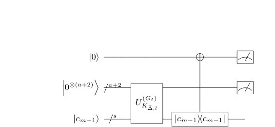
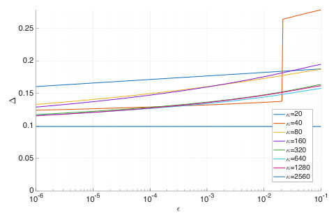
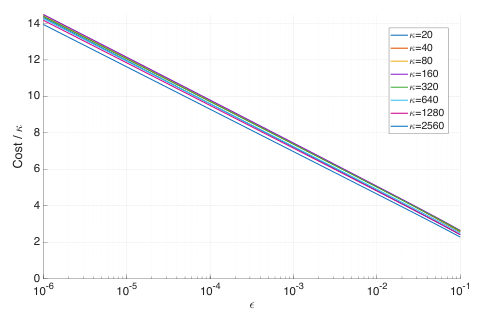
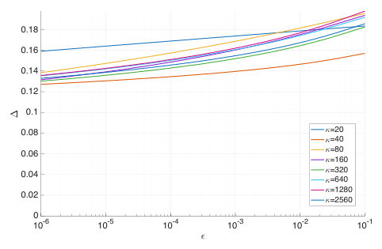
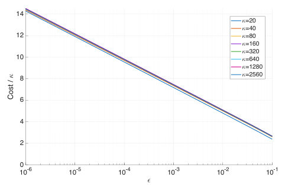
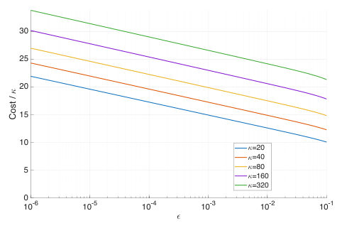
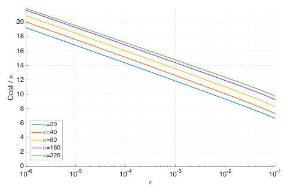
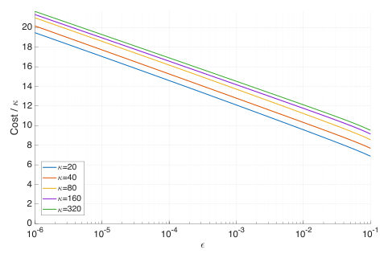
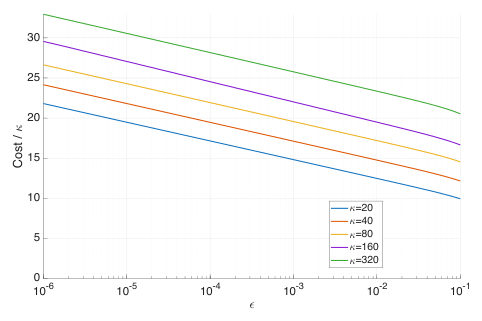
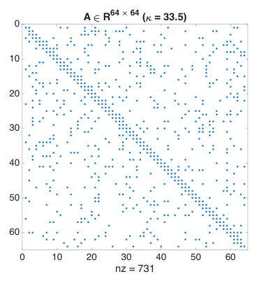
Main problem. Evaluating the practical performance and constant factor overhead of optimal Quantum Linear System Algorithms (QLSAs), specifically comparing the 'Shortcut' method against Quantum Walk-based approaches.
Main result. The Shortcut method is significantly more efficient for non-Hermitian matrices when the solution norm is known, whereas the Quantum Walk method performs better in the unknown-norm regime.
Method. Numerical analysis and comparative benchmarking of the Shortcut method (using Kernel Reflection and Kernel Projection via QSVT) against Adiabatic and Randomized Quantum Walk methods using random linear systems.
Summary. This paper provides a practical performance analysis of state-of-the-art quantum algorithms for solving linear systems. It compares the recently developed 'Shortcut' method with established Quantum Walk-based solvers. The authors find that while the Shortcut method excels when the solution norm is known, the Quantum Walk method remains more robust and efficient when the norm is unknown. This work is crucial for understanding the real-world utility of these algorithms beyond their theoretical asymptotic complexity.
Model / system. The study focuses on the Quantum Linear System Problem (QLSP) for square, sparse matrices $A$, including both Hermitian (Positive Definite) and non-Hermitian families.
Key observables. Computational cost (number of block-encoding calls), success probability, and solution error (Bures distance/infidelity).
Important parameters / regimes. Condition number ($\kappa$), target error ($\epsilon$), solution norm ($\|x\|$), and matrix dimension ($N$).
Assumptions / limitations. Assumes access to a block-encoding $U_A$ of the matrix $A$ and that the matrix is normalized such that $\|A\|=1$.
Figures summary. Circuit diagrams for the Kernel Reflection algorithm and plots showing the scaling of total cost and error as a function of condition number and error tolerance.
Paper structure. The paper introduces the problem of constant factor analysis, presents the mathematical framework for the Shortcut and Quantum Walk methods, details the numerical simulation setup, and provides comparative results across different matrix regimes and norm-knowledge scenarios.
Optimal quantum linear equation solvers provide complexity $O(κ\log(1/ε))$, where $κ$ is the condition number and $ε$ is the allowable error. The optimal solver using a discrete adiabatic approach [PRX Quantum \textbf{3}, 040303 (2022)] has large analytically proven constant factors for the upper bound on the complexity. The constant factors were later found to be about 1,200 times smaller in numerical testing [Quantum \textbf{9}, 1887 (2025)]. This meant it is about an order of magnitude more efficient than using a randomised approach from [PRX Quantum \textbf{6}, 040373 (2025)], which has far smaller analytically proven constant factors. Recently, a ``Shortcut'' method has been found to provide an optimal solver which also has small proven constant factors. In the present work, we conduct a comprehensive numerical analysis comparing this method with the adiabatic solver for two families of random linear systems. We find that, in the case where the solution norm is \emph{unknown}, the adiabatic solver provides slightly better performance. If the solution norm is \emph{known}, then the shortcut method provides significantly better performance for non-Hermitian matrices.
Authors: M. García Olmos, Y. Baba, R. A. Molina, M. Amado
Type: theory · Category: quantum information and computing · PDF: https://arxiv.org/pdf/2604.22553v1
Analysis basis: full PDF text, analyzed in chunks

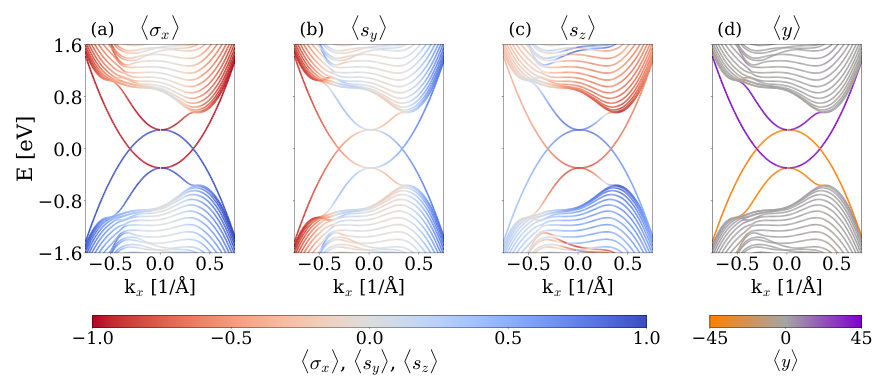
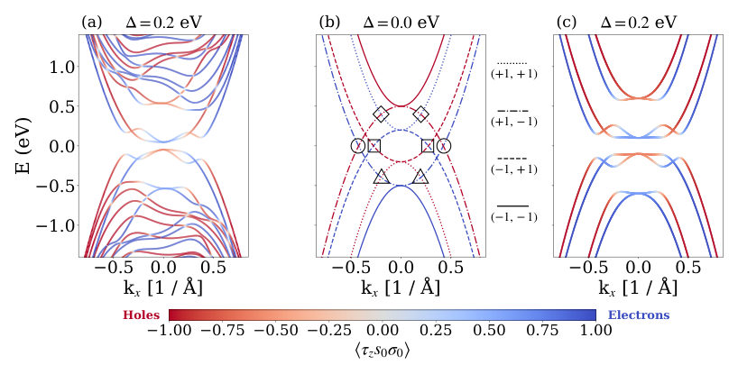
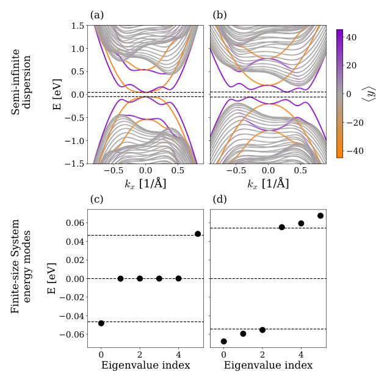
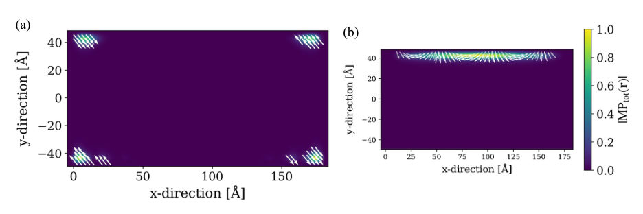
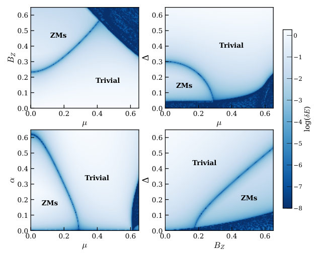
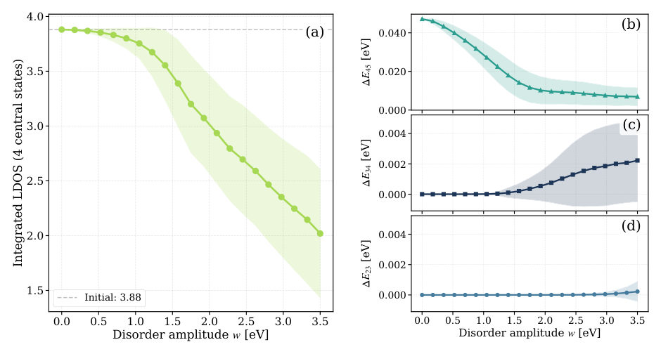
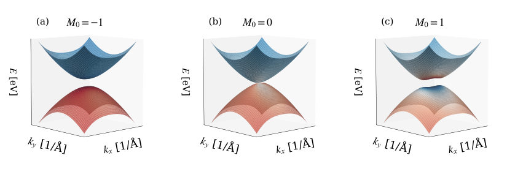
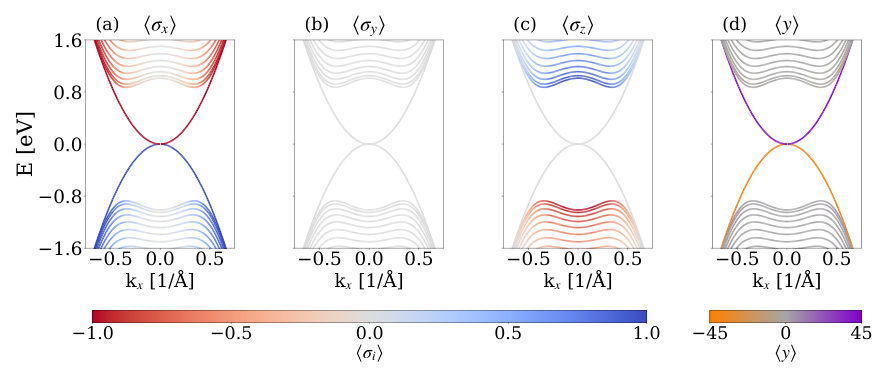
Main problem. The challenge of realizing robust, fault-tolerant Majorana bound states (MBSs) without the experimental difficulties of 1D nanowires or the need for complex engineered nanostructures and vortices.
Main result. The discovery that 2D semi-Dirac materials can host corner Majorana modes through proximity-induced superconductivity, where the system effectively acts as coupled Kitaev chains.
Method. A theoretical framework using the Bogoliubov-de Gennes (BdG) formalism, including numerical diagonalization of a tight-binding model and projection onto edge-state subspaces.
Summary. This paper proposes a new theoretical platform for realizing Majorana bound states using 2D semi-Dirac materials. By applying Rashba spin-orbit coupling and a Zeeman field to these materials under s-wave superconductivity, the authors show that corner Majorana modes emerge at the edges of finite strips. The system can be effectively described as coupled Kitaev chains. Crucially, the study demonstrates that these corner states are remarkably robust against significant levels of Anderson disorder.
Model / system. A 2D semi-Dirac system with anisotropic bulk dispersion (quadratic in kx, linear in ky) subject to Rashba spin-orbit coupling, a perpendicular Zeeman field, and s-wave superconducting proximity effect.
Key observables. Edge-state dispersion, Majorana polarization, Majorana zero modes at corners, Local Density of States (LDOS), and energy splitting between modes.
Important parameters / regimes. Mass term (M0), Rashba coupling (alpha), Zeeman field (BZ), chemical potential (mu), and Anderson disorder strength (w).
Assumptions / limitations. The large-width limit (W >> lambda^-1) allows treating opposite edges as decoupled; the superconducting pairing is momentum-independent; and orbital spinors of opposite edges are orthogonal.
Figures summary. Figure 1 shows numerical edge-state spectra and spin/orbital components; Figure 2 compares full BdG results to a reduced decoupled model; Figure 3 displays energy spectra for semi-infinite and finite systems; Figure 6 illustrates the stability of the integrated LDOS under increasing disorder.
Paper structure. The paper introduces the problem of Majorana realization, defines the semi-Dirac Hamiltonian and its edge-state properties, derives an effective 1D Kitaev chain model via projection, analyzes the emergence of corner modes in finite geometries, and evaluates the robustness of these modes against Anderson disorder.
Why it may be interesting. It proposes a new, naturally occurring 2D platform for Majorana modes that avoids the complexities of engineered nanostructures, which is highly relevant for developing topological qubits for fault-tolerant quantum computing.
Proximity-induced superconductivity in low-dimensional systems offers a powerful pathway to engineer topological superconducting phases in, otherwise, non-superconducting systems. These exotic phases are of fundamental and technological interest due to the presence of robust zero-energy modes, the Majorana bound states. In this work, we propose a theoretical framework to realize Majorana bound states from the edge states of a two-dimensional semi-Dirac system. This anisotropic system, under specific conditions, can host non-chiral edge states that propagate only along particular edges, effectively forming separated one-dimensional channels. We show that the interplay between Rashba spin-orbit coupling and a Zeeman field on this setup provides the right conditions to get an effective p-wave pairing between the edge states by proximity with a s-wave superconductor. In finite geometries, each edge can independently undergo a topological phase transition into a one-dimensional topological superconductor and give rise to four zero-energy modes localized at the strip corners. At low energies, the edge states subspace admits a description in terms of coupled Kitaev chains, providing a clear picture of the origin, robustness, and tunability of the corner Majorana modes. Our results establish semi-Dirac materials as a natural platform for realizing Majorana modes in two dimensions without relying on engineered nanostructures, vortices, or crystalline higher-order topology.
Authors: Yifan Ke, Chuanjing Zeng, Xinming Qin, Wei-Lin Tu, Wei Hu, Jinglong Yang
Type: theory · Category: strongly correlated electrons · PDF: https://arxiv.org/pdf/2604.22343v1
Analysis basis: full PDF text, analyzed in chunks
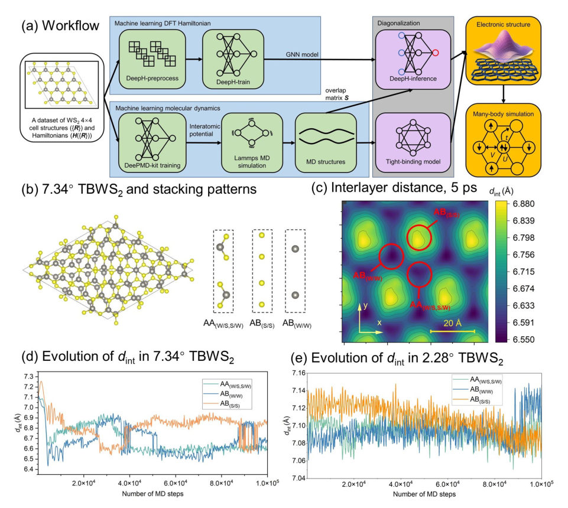
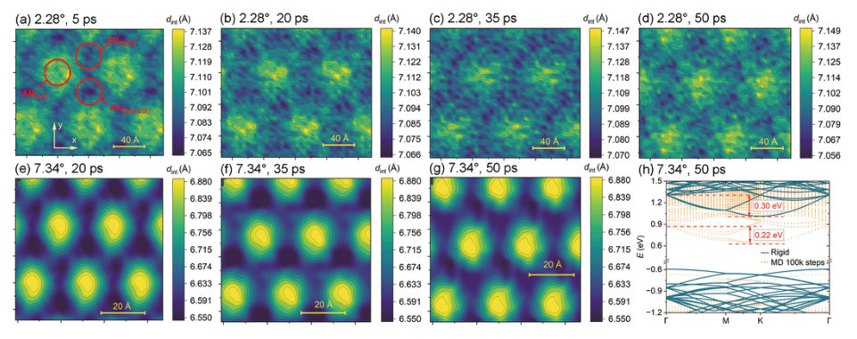
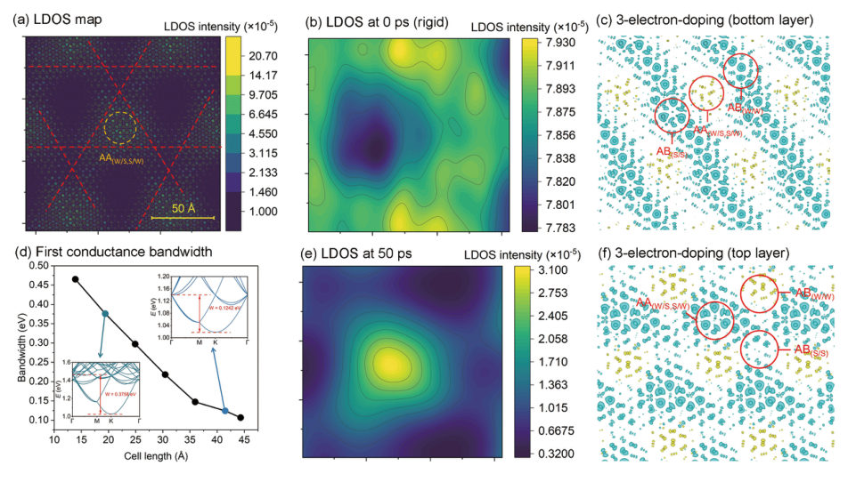
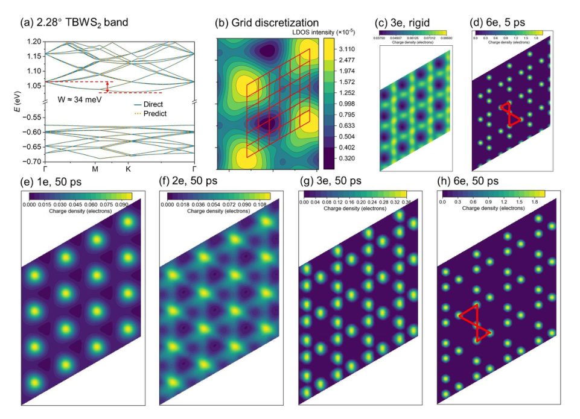
Main problem. Bridging the gap between theoretical predictions and experimental observations in large-scale moire systems by accounting for how lattice dynamics and thermal fluctuations influence electronic localization and Wigner crystallization.
Main result. The inclusion of dynamical effects from lattice vibrations deepens moire potential wells and narrows the conduction band, leading to robust Wigner crystallization and the emergence of a kagome-patterned three-electron state.
Method. A machine-learning-based workflow integrating DeePMD for molecular dynamics and DeepH for machine-learned electronic Hamiltonians, combined with DFT-level accuracy (HONPAS) and DMRG simulations.
Summary. This paper presents a new machine-learning workflow to simulate large-scale moire supercells that are too large for traditional DFT. By incorporating lattice vibrations and structural relaxation, the authors show that the moire potential wells deepen, which facilitates the formation of robust Wigner crystals. They specifically identify a kagome-patterned electron state at certain doping levels. This approach provides a practical way to connect atomic-scale dynamics to large-scale emergent electronic phenomena in 2D materials.
Model / system. Twisted bilayer tungsten disulfide (TBWS2) at small twist angles (e.g., 2.28 and 7.34 degrees), modeled using an effective Hubbard model with site-dependent potentials and Coulomb interactions.
Key observables. Interlayer distance (d_int), conduction band bandwidth, Local Density of States (LDOS), and electron density distributions.
Important parameters / regimes. Twist angles (2.28 to 13.17 degrees), Hubbard U (up to 50 eV), intersite Coulomb interaction V, and temperature (100 K).
Assumptions / limitations. The use of a 11-orbital tight-binding model and the assumption that machine-learned potentials accurately capture the essential physics of the large-scale MD trajectories.
Figures summary. Figure 1 shows the workflow and structural motifs; Figure 2 illustrates interlayer distance evolution; Figure 4 shows conduction bandwidth; Supplemental figures compare DFT packages (VASP vs HONPAS) and band structures.
Paper structure. The paper introduces a machine-learning workflow, validates its accuracy against plane-wave DFT, applies it to simulate large-scale MD for twisted TMDs, analyzes the resulting electronic structure and band narrowing, and concludes with many-body DMRG simulations of Wigner crystal formation.
Why it may be interesting. The paper demonstrates how structural fluctuations and lattice dynamics can be used to tune many-body phases and emergent geometries (like kagome patterns) in a controlled, theoretically predictable way.
Understanding the dynamical evolution of large-scale moiré systems is crucial for connecting theoretical predictions with experimental observations. Here we develop a machine-learning-based workflow, integrating DeePMD and DeepH frameworks with first-principles calculations, to efficiently investigate time-dependent structural and electronic responses in twisted bilayer transition metal dichalcogenides (TMDs) with experimentally relevant moiré supercells containing over 3000 atoms. Using $\mathrm{WS_2}$ as a representative system, we show that low-temperature lattice vibrations and relaxation deepen the moiré potential wells, narrow the lowest conduction band, and facilitate the formation of strongly localized electronic states. Based on DFT-derived moiré potentials that incorporate these dynamical effects, density-matrix-renormalization-group (DMRG) simulations reveal robust Wigner crystallization and a kagomé-patterned three-electron state, consistent with recent experimental observations. Our workflow provides a practical route for exploring large moiré supercells beyond static configurations and offers new insight into the interplay between lattice dynamics, electronic localization, and emergent correlated states in twisted two-dimensional materials.
Authors: Ritajit Kundu, Ajit C. Balram
Type: theory · Category: strongly correlated electrons · PDF: https://arxiv.org/pdf/2604.22628v1
Analysis basis: full PDF text, analyzed in chunks
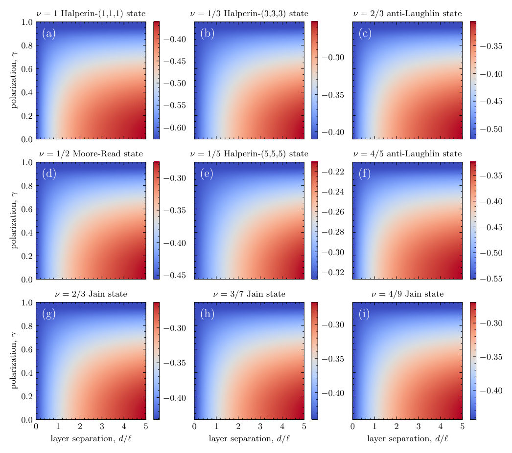
Main problem. Computing density-density correlation functions and energies for all members of a spin multiplet is computationally expensive because each state must typically be evaluated separately.
Main result. The authors derive exact identities that allow the pair-correlation functions and static structure factors of any state in a spin multiplet to be computed using only the properties of the highest-weight (fully polarized) state.
Method. The authors use SU(2) spin rotation symmetry to derive analytical relations between correlation functions and apply these to compute thermodynamic energies via integration of the structure factors.
Summary. This paper provides a new analytical method to significantly reduce the computational complexity of studying spin-degenerate many-body systems. By deriving exact relations between states in a spin multiplet, the authors show that one only needs to calculate the correlation functions for a single fully polarized state to know the properties of the entire multiplet. They demonstrate the utility of this method by analytically computing the energy of the Halperin-(1,1,1) state and numerically evaluating various other fractional quantum Hall states. This approach is particularly useful for studying bilayer and moiré systems where spin or pseudospin degrees of freedom are present.
Model / system. The study focuses on many-body systems with spin or pseudospin (layer, orbital, or valley) degrees of freedom, specifically fractional quantum Hall (FQH) states in bilayer or multi-component systems.
Key observables. Pair-correlation function g(r), static structure factor S(q), and ground-state Coulomb energy E0.
Important parameters / regimes. Layer separation (d/l), polarization/density imbalance (gamma), and total spin quantum number (S).
Assumptions / limitations. The relations are limited to states within the same spin multiplet and rely on the assumption of SU(2) spin-rotation symmetry; energy calculations rely on approximate functional forms for g(r).
Figures summary. Figure 1 shows density plots of Coulomb energies for various FQH states (such as Halperin-(1,1,1) and Moore-Read) as a function of layer separation and polarization.
Paper structure. The paper introduces the computational problem, derives exact analytical identities for correlation functions using SU(2) symmetry, applies these relations to calculate energies for specific FQH states, and discusses results for bilayer systems.
We present exact identities relating the pair-correlation functions and static structure factors of states in a spin multiplet. This allows us to compute these density-density correlation functions of all members of the multiplet using just these correlation functions of the highest-weight state. We apply these relations to obtain energies for many fractional quantum Hall (FQH) states. In particular, we analytically compute the energies of the Halperin-$(1,1,1)$ state as a function of density imbalance and layer separation, and numerically evaluate these energies for many other FQH states.
Authors: Tom Drechsler, Matthias Vojta
Type: theory · Category: strongly correlated electrons · PDF: https://arxiv.org/pdf/2604.21973v1
Analysis basis: full PDF text, analyzed in chunks
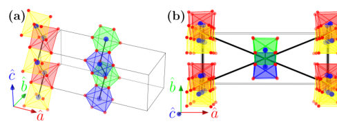
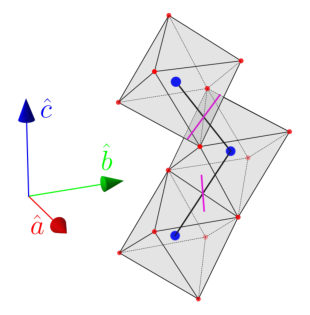
Main problem. The study aims to understand the complex 3D magnetic phase diagram of CoNb2O6, specifically how the interplay of frustrated inter-chain coupling and spin-orbit coupling drives various field-induced phases.
Main result. The authors identify six distinct field-driven phases (including commensurate, incommensurate, and spin-flip phases) and demonstrate that the phase diagram is extremely sensitive to even minute changes in the applied magnetic field direction.
Method. Semiclassical techniques and linear spin-wave theory are used at zero temperature to map the phase diagram and compute magnetic excitation spectra.
Summary. This paper investigates the magnetic properties of the material CoNb2O6 using a 3D twisted Kitaev model. It explores how the competition between frustrated inter-chain interactions and spin-orbit coupling leads to a complex variety of magnetic phases. The study reveals that the phase sequence is highly sensitive to the angle of the applied magnetic field. The theoretical results, including magnetization and excitation spectra, are shown to be in good agreement with existing experimental observations.
Model / system. A 3D twisted Kitaev model for the magnetic insulator CoNb2O6, featuring Co2+ ions in zigzag chains with bond-dependent Ising interactions, frustrated inter-chain Heisenberg coupling, and an anisotropic g-tensor.
Key observables. Longitudinal and transverse magnetization, magnetic excitation spectra (magnon dispersion), dynamical structure factor, and magnetic Bragg peaks.
Important parameters / regimes. Inter-chain coupling strength (J_H,l), lattice distortion parameter (alpha), magnetic field magnitude and direction (theta, phi), and Kitaev coupling (K).
Assumptions / limitations. The system is treated as an effective spin-1/2 model; dipole-dipole interactions are neglected; semiclassical spin-wave theory requires a manual rescaling of transverse field components to correct for the Ising limit.
Figures summary. Figure 1 shows the crystal structure; Figure 2 illustrates the twisted Kitaev chain; Figure 3 displays model ground states and spin structure factors; Figure 4 shows phase diagrams; Figures 8-10 present magnetization and dynamical structure factor results.
Paper structure. The paper begins by defining the 3D twisted Kitaev model and its Hamiltonian, proceeds to describe the semiclassical and spin-wave methods, presents the mapping of the field-driven phase diagram, compares results to experimental data, and concludes with discussions on phase sensitivity and fluctuations.
The Ising chain in a transverse field stands out as a paradigmatic example for a quantum phase transition. CoNb$_2$O$_6$ has been discussed as a material realization of this physics, but it was later realized that its magnetic exchange couplings are more complicated, taking the form of twisted Kitaev chains. Here we study a three-dimensional model for CoNb$_2$O$_6$, taking into account both Kitaev physics and frustrated inter-chain coupling, in applied magnetic field. Using semiclassical techniques at zero temperature, we map out the sequence of field-driven phases for arbitrary field direction; these include phases with commensurate and incommensurate inter-chain order. As a result of spin-orbit coupling, the phase diagram is extremely sensitive to small changes in the field angle. We compute static observables as well as magnetic excitation spectra in the various phases and connect our results to existing experimental data.
Authors: Mikhail Egorov
Type: theory · Category: other · PDF: https://arxiv.org/pdf/2604.22537v1
Analysis basis: full PDF text, analyzed in chunks
Main problem. Determining total cross sections for fusion and breakup reactions of light nuclei while accurately accounting for long-range Coulomb interactions and electron anti-screening effects.
Main result. The multicluster approach provides total cross sections for various helium and lithium fusion reactions that are in good agreement with experimental data, specifically demonstrating the importance of the cluster mechanism and Coulomb effects.
Method. The work employs Faddeev integral equations in momentum space using a two-potential method to handle the Coulomb t-matrix and a cluster representation for the colliding nuclei.
Summary. This paper presents a theoretical framework using Faddeev integral equations to calculate fusion and breakup cross sections for light nuclei. By using a multicluster model, the author accounts for the internal structure of the colliding nuclei and the complex long-range Coulomb interactions. The results show strong agreement with existing experimental data for various helium and lithium reactions. The study also investigates the impact of atomic electron anti-screening on these nuclear processes.
Model / system. A multicluster realization of the three-body problem involving light nuclei such as 3He, T, D, 4He, and 7Li, where nuclei are treated as bound clusters of nucleons.
Key observables. Total cross sections, astrophysical S-factors, breakup amplitudes, and Coulomb t-matrix off-shell effects.
Important parameters / regimes. Kinetic energy range T in [1 keV, 20 MeV], Coulomb screening radius, and Sommerfeld parameter.
Assumptions / limitations. The calculation uses a truncated iteration of the Faddeev equations (up to n=2) and assumes specific cluster structures for the projectile and target nuclei.
Figures summary. The notes mention a Figure 4, but a full summary of all figures is not available from the provided text.
Paper structure. The paper progresses from the theoretical necessity of Faddeev equations to the implementation of the multicluster model, followed by the treatment of Coulomb effects and the presentation of calculated cross sections compared to experimental data.
This work describes a few-body dynamics method based on the Faddeev integral equations in momentum space for determining the total cross sections of fusion and breakup reactions with two- and three-body final channels in the continuum, employing a cluster representation of the colliding nuclei. Total cross sections were obtained for the reactions $^3\text{He}(T,D)^4\text{He}$, $^3\text{He}(T,np)^4\text{He}$, $^3\text{He}(T,nD)^3\text{He}$, $^3\text{He}(^3\text{He},2p)^4\text{He}$, $^3\text{He}(^3\text{He},pD)^3\text{He}$, $^7\text{Li}(^3\text{He},\phantom{0}^4\text{He})^6\text{Li}$, $^7\text{Li}(^3\text{He},D^4\text{He})^4\text{He}$, and $^7\text{Li}(^3\text{He},T^3\text{He})^4\text{He}$, in which both the projectile and the target nucleus were treated in a cluster representation. The work also implements a two-potential method to determine the Coulomb $t-$matrix and to account for Coulomb effects in short-range dynamics in momentum space. Calculations of the initial-state Coulomb interaction were performed; furthermore, an estimate was obtained for the magnitude of the off-shell effect of the Coulomb $t-$matrix, as well as the magnitude of the atomic electron anti-screening effect on the Coulomb interaction of the colliding nuclei. The calculated contribution of the cluster mechanism to the total cross section of the considered fusion reactions in the kinetic energy range $T\in[1~\text{keV},20~\text{MeV}]$ is in good agreement with known experimental data.
Authors: Abbas Ali Saberi, Roderich Moessner
Type: theory · Category: statistical mechanics · PDF: https://arxiv.org/pdf/2604.22447v1
Analysis basis: full PDF text, analyzed in chunks
Main problem. Investigating how long-range algebraic correlations between matrix elements affect the eigenvalue statistics and spectral density of random matrices.
Main result. The study identifies a critical threshold at H = 3/4 where the spectral density transitions from heavy-tailed generalized t-distributions to Gaussian statistics, and a rigidity threshold at H = 1/2.
Method. Analytical scaling analysis of eigenvalue moments and Wick-type decomposition of the trace of M^4, supported by extensive numerical simulations.
Summary. This paper explores how power-law correlations in random matrix elements alter their spectral properties. It identifies a phase transition at a critical exponent H = 3/4, where the eigenvalue distribution shifts from heavy-tailed distributions to Gaussian statistics. The authors also uncover a secondary threshold at H = 1/2 that affects spectral rigidity. These findings provide a new framework for understanding universality in non-invariant, spatially embedded random matrix ensembles.
Model / system. A symmetric random matrix ensemble where elements are generated via a thresholded Gaussian random field on a 2D square lattice with power-law correlations decaying as r^-2H.
Key observables. Spectral density P(lambda), eigenvalue variance, excess kurtosis, and the scaled average of the maximum eigenvalue.
Important parameters / regimes. The correlation exponent H, which defines different regimes: 0 <= H <= 1/4 (divergent kurtosis), 1/4 < H < 3/4 (finite positive kurtosis), H = 3/4 (Gaussian transition), and H > 3/4 (standard RMT/semicircle law).
Assumptions / limitations. The underlying Gaussian field is zero-mean, and the nonlinear thresholding process preserves the long-range correlation structure of the original field.
Figures summary. Figure 1 shows eigenvalue variance scaling with L; Figure 2 shows excess kurtosis scaling with L; Figure 3 shows the probability density function P(lambda) demonstrating data collapse and agreement with analytical predictions.
Paper structure. The paper moves from the construction of the correlated matrix model to the derivation of scaling laws for moments, identifies specific critical regimes for the exponent H, and concludes with numerical verification of the spectral transitions.
Motivated by the importance ascribed to correlations in random matrices used to model phenomena in various scientific disciplines, we report how algebraic correlations between matrix elements affect the eigenvalue statistics and spectral density of random matrices. These correlations, introduced through a long-range correlated percolation model, decay as a power law $\propto r^{-2H}$, with exponent $H > 0$. As $H$ varies, both the eigenvalue distribution and excess kurtosis undergo qualitative changes. At the threshold $H_c = 3/4$, characterized by emergent Gaussian statistics, a sign change in excess kurtosis marks a transition from a fat-tailed generalized $t$-distribution to one that gradually approaches the standard semicircle law for $H \gg H_c$. Our analytical results, based on scaling analysis and supported by extensive numerical simulations, provide clear predictions and uncover novel spectral regimes in random matrix theory. Our results connect techniques from statistical physics, percolation theory, and random matrix analysis, offering a new perspective on universality in correlated ensembles.
Authors: Tassa Thaksakronwong, Koichi Miyamoto
Type: theory · Category: quantum information and computing · PDF: https://arxiv.org/pdf/2604.22463v1
Analysis basis: full PDF text, analyzed in chunks
Main problem. Developing efficient quantum algorithms for the exact simulation and amplitude encoding of correlated Gaussian random vectors and their exponentiated forms, specifically for applications in rough volatility modeling.
Main result. The authors propose a quantum algorithmic framework that achieves sub-cubic complexity for preparing exponentiated Gaussian processes, providing a potential quantum advantage over classical Cholesky-based sampling methods.
Method. The approach utilizes block-encoding, Quantum Singular Value Transformation (QSVT), and Quantum Amplitude Estimation (QAE) to prepare and manipulate quantum states representing Gaussian paths.
Summary. This paper presents a new quantum algorithmic framework for the amplitude encoding of correlated Gaussian vectors and their exponentiated versions. By using techniques like block-encoding and QSVT, the authors demonstrate that quantum computers can potentially simulate complex Gaussian processes, such as fractional Brownian motion, with sub-cubic complexity. This provides a foundational primitive for quantum-enhanced financial modeling, specifically for rough volatility models like the rough Bergomi process. The work bridges quantum computing primitives with high-dimensional stochastic processes used in quantitative finance.
Model / system. The mathematical models include multivariate Gaussian distributions, Riemann-Liouville fractional Brownian motion, and stationary fractional Ornstein-Uhlenbeck processes, applied to the rough Bergomi financial volatility model.
Key observables. Integrated variance, integrated volatility, and the norm of the prepared Gaussian vectors.
Important parameters / regimes. Hurst index (H), Frobenius norm of the covariance matrix, condition number (kappa), and maximal eigenvalue (lambda_max).
Assumptions / limitations. Assumes the availability of an efficient O(polylog N) quantum data loader for the covariance matrix and that eigenvalue/condition number estimates are available within bounded factors.
Paper structure. The paper introduces the problem of Gaussian vector simulation, develops the block-encoding and state preparation algorithms, provides a resource and complexity analysis, applies the framework to rough volatility models (rBergomi), and concludes with mathematical proofs for the covariance structures in the appendix.
Quantum computing may speed up numerical problems involving large matrices that are demanding for classical computers, and active research on this possibility is ongoing. In this work, we propose quantum algorithms for the exact simulation of a normalised correlated Gaussian random vector $|x\rangle=\vec{x}/\lVert\vec{x}\rVert$, $\vec{x}\sim\mathcal{N}(0,Σ)$, and its exponentiation $|e^{\vec{x}} \rangle= e^{\vec{x}}/\lVert e^{\vec{x}}\rVert$. When an $O(\mathrm{polylog} N)$-gate-depth quantum data loader for the covariance matrix $Σ\in\mathbb{R}^{N\times N}$ is available, preparing $|x\rangle$ and $|e^{\vec{x}}\rangle$ require $\widetilde{O}\left(\frac{\lVertΣ\rVert_F}{λ_{\max}}κ^{1.5}\right)$ and $\widetilde{O}\left(\lVert\vec{x}\rVert\frac{\lVertΣ\rVert_F}{λ_{\max}}κ^{1.5}\right)$ elementary gate depth respectively, where $\lVertΣ\rVert_F$, $λ_{\max}$, $κ$ denote the Frobenius norm, maximal eigenvalue, and condition number of $Σ$. Motivated by financial applications, we provide an end-to-end resource analysis when $\vec{x}$ represents a sample path of a Riemann-Liouville or standard fractional Brownian motion, or of a stationary fractional Ornstein-Uhlenbeck process. As a concrete example, we construct the quantum state encoding the rough Bergomi variance process and analyse the extraction of the integrated variance via quantum amplitude estimation. Under specific conditions, the dependence of $\lVertΣ\rVert_F/λ_{\max}$ and $κ$ on $N$ is small, and subcubic complexity in $N$ is achieved, indicating a quantum advantage over classical Cholesky-based sampling methods. To our knowledge, this constitutes the first quantum algorithmic framework for the amplitude encoding of exponentiated Gaussian processes, providing foundational primitives for quantum-enhanced financial modelling.
Authors: Connor Howe, Cristina Radian, Justin Woodring, Vardaan Sahgal, Brian J. McDermott
Type: both · Category: quantum information and computing · PDF: https://arxiv.org/pdf/2604.22664v1
Analysis basis: full PDF text, analyzed in chunks
Main problem. The difficulty of executing large, high-performance quantum circuits on NISQ hardware due to high error rates and limited qubit counts, specifically identifying which circuit classes benefit most from circuit partitioning.
Main result. The custom 'fitv3' heuristic can reduce error by up to 55% and improve fidelity for GHZ circuits, though partitioning can degrade performance for brickwork circuits at larger scales.
Method. A comparison of three strategies: a no-cut baseline, Qiskit's automatic cut-finding, and a custom budget-aware heuristic (fitv3) using a DAG-to-weighted-graph transformation and hardware-aware qubit mapping.
Summary. This paper investigates quantum circuit partitioning (circuit cutting) as a way to run large circuits on small, noisy quantum hardware. The authors propose a new, budget-aware heuristic called 'fitv3' that optimizes the trade-off between error reduction and the exponential sampling overhead of reconstruction. They demonstrate that while partitioning is not a universal solution, it significantly improves fidelity for specific structured circuits like GHZ and QFT. The work provides a practical framework for utilizing distributed quantum computing resources more effectively.
Model / system. Noisy simulation using Qiskit Aer, modeled after the IBM 'ibm_brisbane' superconducting hardware profile, testing circuit families including GHZ, QFT, brickwork, and random circuits.
Key observables. Mean Absolute Error (MAE) of expectation values and overall output fidelity, specifically for z_magnetization and GHZ stabilizers.
Important parameters / regimes. Circuit sizes ranging from 4 to 16 qubits, maximum subcircuit width of 4 qubits, and a maximum sampling overhead cap of 10^8.
Assumptions / limitations. The evaluation assumes a static snapshot of hardware calibration data and focuses on wire cuts rather than gate cuts.
Figures summary. Figure 1 shows the circuit cutting workflow; Figure 2 compares MAE across different strategies; Figure 5 shows the 'win-rate' of the custom method against the baseline as a function of qubit count.
Paper structure. The paper introduces the problem of hardware constraints, reviews existing circuit cutting literature, presents the proposed fitv3 heuristic and integrated pipeline, details the simulation setup and circuit families, presents comparative results across different metrics, and concludes with limitations and future work.
Near-term hardware is constrained by high error rates, small qubit counts, and relatively low output fidelity, making the execution of large, high performance quantum circuits difficult. Circuit partitioning (or circuit cutting) has emerged as a promising approach to circumvent these limitations by decomposing circuits into smaller subcircuits at two-qubit interaction points. However, it remains unclear which classes of circuits benefit the most from partitioning and under what hardware conditions it is most effective. In this work, we evaluate the suitability of quantum circuits for partitioning from three perspectives: improving fidelity, enabling distributed execution, and scaling to larger circuit sizes. Specifically, we compare uncut circuit execution against two circuit partitioning approaches: Qiskit's automatic cut finding technique and a custom performance optimized circuit cutting method. We also measure these across GHZ, QFT, brickwork, and random quantum circuits ranging from 4 to 14 qubits, using mean absolute error of expectation values and overall output fidelity. Our results show that partitioning benefits larger, highly interconnected circuits, with our custom method reducing error by up to 55\% and improve fidelity for GHZ circuits, but degrading performance for brickwork circuits at larger scales.
Authors: Bao-Qing Wang, Can Shao, Takami Tohyama, Hong-Gang Luo, Hantao Lu
Type: theory · Category: strongly correlated electrons · PDF: https://arxiv.org/pdf/2604.22329v1
Analysis basis: full PDF text, analyzed in chunks
Main problem. The study investigates whether an antiferromagnetic Chern insulator (AFCI) phase can emerge in the Kane-Mele-Hubbard model, addressing the controversy between previous mean-field and quantum Monte Carlo results.
Main result. The authors provide evidence for the existence of an AFCI phase (C=1) where Hubbard-induced antiferromagnetic perturbations spontaneously break time-reversal symmetry, and they propose a modified numerical scheme to accurately calculate the quantized Chern number.
Method. The study uses Exact Diagonalization (ED) on a 12A cluster, Twisted Boundary Conditions (TBC) to evaluate topological invariants, and Mean-Field theory to provide physical insight into the effective Dirac masses.
Summary. This paper investigates the emergence of an antiferromagnetic Chern insulator phase in the Kane-Mele-Hubbard model. By using exact diagonalization and a new computational scheme to handle level crossings, the authors demonstrate that Hubbard interactions can drive a transition that breaks time-reversal symmetry. The results resolve long-standing discrepancies in the literature regarding the stability of this phase. This work is significant for understanding how electron correlations can induce topological transitions in systems with intrinsic spin-orbit coupling.
Model / system. The Kane-Mele-Hubbard (KMH) model on a honeycomb lattice at half-filling, including nearest-neighbor hopping, intrinsic spin-orbit coupling, a staggered sublattice potential, and onsite repulsive Hubbard interaction.
Key observables. Chern number (C), spin Chern number (Cs), excitation gap, fidelity susceptibility, and spin-density-wave (SDW) and charge-density-wave (CDW) structure factors.
Important parameters / regimes. Hubbard interaction strength (U), sublattice potential (Delta_AB), and intrinsic spin-orbit coupling strength (t2).
Assumptions / limitations. The study is limited by finite-size effects inherent to Exact Diagonalization on small clusters.
Figures summary. Figure 1 shows the ED phase diagram; Figure 2 displays the excitation gap and topological transitions; Figure 7 shows the phase diagram with mass imbalance; Figure 10 and 11 present Mean-Field phase diagrams and spin-resolved effective potentials.
Paper structure. The paper introduces the scientific problem and model, presents the ED phase diagram and identification of the AFCI phase, details a modified numerical algorithm for Chern number calculation, explores the stability of the phase under mass imbalance, and provides Mean-Field analysis for physical interpretation.
The emergence of the antiferromagnetic (AFM) Chern insulator (AFCI) phase in the Kane-Mele-Hubbard (KMH) model with a finite sublattice potential is investigated. The AFCI, characterized by AFM correlations coexisting with quantized Hall conductance, has long raised the question of whether it can exist in the KMH model that respects time-reversal symmetry (TRS). Using exact diagonalization, we analyze the excitation gap, anisotropic AFM correlations along the $z$ axis and in the $xy$ plane, and the fidelity susceptibility under twisted boundary conditions, all of which provide consistent evidence for the AFCI phase. In particular, our numerical evaluation on the (spin) Chern number reveals a breakdown of adiabatic continuity in the twist-angle space, indicating an instability toward TRS breaking driven by Hubbard-induced AFM perturbations. A modified computational scheme is further proposed, which yields a robust quantized Chern number $C=1$ within this phase.
Papers from cond-mat.mtrl-sci, mes-hall, other, soft, supr-con. These archives are de-prioritized — they appear at the end regardless of relevance score.
Authors: Xunyao Luo, Xander Peetroons, Tsung-Yeh Yang, Ruben M. Otxoa, Normann Mertig, Sofie Beyne, Julien Jussot, Yosuke Shimura, Clement Godfrin, Bart Raes, Roy Li, Roger Loo, Sylvain Baudot, Stefan Kubicek, Shuchi Kaushik, Danny Wan, Kristiaan De Greve, Takuma Kuno, Takeru Utsugi, Noriyuki Lee, Itaru Yanagi, Toshiyuki Mine, Satoshi Muraoka, Hideo Arimoto, Shinichi Saito, Digh Hisamoto, Ryuta Tsuchiya, Hiroyuki Mizuno, Charles Smith, Andrew Ramsay
Type: experiment · Category: quantum information and computing · PDF: https://arxiv.org/pdf/2604.22547v1
Analysis basis: full PDF text, analyzed in chunks
Topic relevance: 🔥 QC/QI experiment 4/5
Main problem. The paper investigates how to achieve fast, all-electrical control of electron spins in silicon quantum dots without the need for micromagnets, by leveraging spin-valley hybridization.
Main result. The researchers observed a >20-fold enhancement of the Rabi frequency near a valley level anti-crossing, attributed to an electric-dipole transition activated by inter-valley spin coupling.
Method. Electron Spin Resonance (ESR) spectroscopy was performed on a single-electron spin in a planar Si-MOS quantum dot using microwave pulses from an aluminum antenna and RF-SET charge sensing for readout.
Summary. This paper demonstrates that spin-valley coupling in planar silicon quantum dots can be used to significantly enhance the Rabi frequency for spin manipulation. By operating near a valley level anti-crossing, the researchers achieved an electric-dipole-driven transition that is much stronger than traditional magnetic-dipole ESR. They also characterized the anisotropy of the g-factor and the inter-valley spin coupling. This provides a promising pathway for fast, all-electrical spin control in silicon-based quantum computing without requiring integrated micromagnets.
Model / system. A single-electron spin in a planar n-type Si-MOS double quantum dot on an SOI wafer, modeled as a four-state system comprising two spin and two valley states.
Key observables. Rabi frequency enhancement, valley splitting, g-factor anisotropy (difference and mean), and spin-relaxation rate (hot-spot).
Important parameters / regimes. Valley splitting of ~66 ueV, electron temperature of ~120 mK, and an electric-dipole drive strength approximately 200 times stronger than the magnetic-dipole drive.
Assumptions / limitations. The model assumes the primary g-factor tensor difference lies in off-diagonal terms and that the inter-valley spin-orbit field is in-plane.
Figures summary. Fig 1 shows the device schematic and ESR spectra; Fig 5 illustrates spin relaxation visibility as a function of magnetic field.
Paper structure. The paper introduces the problem of spin control, describes the Si-MOS device architecture, presents ESR spectroscopy results near the anti-crossing, analyzes the anisotropy of the g-factor and spin-valley coupling, and concludes with implications for all-electrical spin control.
Why it may be interesting. The discovery of a mechanism for massive enhancement of Rabi frequency via electric-dipole transitions in a multi-level system is highly relevant to the development of fast, high-fidelity control protocols in multi-level quantum systems.
Electron spin resonance spectroscopy (ESR) of a single electron in planar Si-MOS quantum dot is reported in the vicinity of a valley level anti-crossing. A number of one and two-photon resonances are observed due to mixing of magnetic spin-flip and electric valley-flip transitions. This allows the reconstruction of the energy-level diagram of a four state system with two valley and two spin states. Near the anti-crossing, an enhancement of the Rabi frequency is observed. This is attributed to an electric-dipole transition activated by admixing of the upper energy level due to inter-valley spin coupling. The electric-dipole transition may be driven via capacitive coupling between the ESR antenna, and the confinement gate. To characterize spin-valley coupling responsible for the enhancement, we measure the anisotropy of the g-factor difference between the two valley states, the mean g-factor and the inter-valley spin coupling for both in and out-of-plane magnetic fields. The inter-valley spin coupling is strongly modulated by the direction of the B-field, and is strongest for out-of-plane B-field, consistent with an in-plane spin-valley field. In principle, this strong Electric dipole spin resonance (EDSR) effect could be utilized for fast all-electrical spin control in small-scale devices.
Authors: Dawid Dopierała, Luca Cocconi, Robert L. Jack, Anton Souslov
Type: theory · Category: statistical mechanics · PDF: https://arxiv.org/pdf/2604.22408v1
Analysis basis: full PDF text, analyzed in chunks
Topic relevance: 🔥 dissipative systems 3/5 · 🔥 non-equilibrium dynamics 3/5 · correlated / nonlocal dissipation 2/5 · driven-dissipative phase transition 2/5 · methods for driven-dissipative 2/5 · non-equilibrium universality 2/5
Main problem. How to accelerate the kinetics of self-assembly and transition between metastable states without altering the equilibrium Boltzmann distribution or distorting the final target structures.
Main result. Non-reciprocal (odd) interactions induce probability currents that accelerate assembly via mode coupling and increased effective mobility, though this comes at the cost of increased power dissipation.
Method. Analytical derivation using Langevin and Fokker-Planck equations, adiabatic elimination of fast modes, and numerical simulations of stochastic dynamics.
Summary. The paper investigates how 'odd' or non-reciprocal forces can be used to speed up the self-assembly of mechanical structures. It demonstrates that these forces can drive particles across energy barriers to accelerate transitions without changing the final equilibrium state. The authors identify a fundamental trade-off between the speed of assembly and the energy dissipated by the active forces. This suggests a 'catalytic' strategy where active forces are used transiently to drive assembly and then deactivated to maintain high-fidelity structures.
Model / system. Mechanical networks of overdamped thermal colloids subject to non-conservative transverse forces, including specific models like two-particle odd springs, odd triangles, and four/six-particle square networks.
Key observables. Probability currents, transition rates (flip rates), assembly time, power dissipation, and steady-state probability distributions.
Important parameters / regimes. Non-reciprocal coupling strength (ka), spring constant (k), temperature (T), and angular potential strength (epsilon).
Assumptions / limitations. Low-temperature regime, separation of time scales between fast and slow modes, and small deformation approximations for certain analytical derivations.
Figures summary. Figure 1 shows steady-state distributions, transition rates, and assembly trajectories; Figure 2 illustrates the path from square to line; Figure A1 displays elastic eigenmodes of the triangle.
Paper structure. The paper introduces the problem of kinetic bottlenecks, presents a framework for non-reciprocal forces, analyzes specific small-scale models (2, 3, and 4-particle systems), explores complex assembly (double-square), and concludes with a discussion on the energetic trade-offs and catalytic applications.
Why it may be interesting. The study of non-reciprocal dynamics and the decoupling of kinetics from thermodynamics is highly relevant to open quantum systems and the control of non-equilibrium steady states.
Active self-assembly can bypass equilibrium bottlenecks through external energy injection. However, generic driving typically distorts target structures and requires sustained energy input even after assembly is complete. Here, we investigate a class of non-reciprocal interactions that accelerates assembly while preserving the equilibrium Boltzmann distribution. The probability currents induced by these odd interactions reshape fundamental processes, including activated barrier crossing, soft-mode relaxation, and transitions between metastable states. In particular, these currents enhance Arrhenius rates by driving particles across otherwise inaccessible free-energy barriers. We show that this acceleration arises from an effective increase in the mobility of the reaction coordinate, mediated by non-reciprocal coupling between mechanical modes. In turn, we discover a trade-off between kinetic acceleration and power dissipation when active forces are engaged. Our results suggest a route to energy-efficient, high-fidelity self-assembly via active catalysts that transiently accelerate relaxation toward equilibrium targets and deactivate upon reaching the desired state.
Authors: Kento Yasuda, Bin Zheng, Zhongqiang Xiong, Zhanglin Hou, Kenta Ishimoto, Xinpeng Xu, David Andelman, Shigeyuki Komura
Type: theory · Category: statistical mechanics · PDF: https://arxiv.org/pdf/2604.22371v1
Analysis basis: full PDF text, analyzed in chunks
Topic relevance: 🔥 non-equilibrium dynamics 3/5 · Keldysh / 2PI / non-Gaussian methods 2/5 · dissipative systems 2/5 · methods for driven-dissipative 2/5
Main problem. Existing formulations of the Onsager and Onsager-Machlup principles lack covariance, making them inconsistent under coordinate transformations and unable to account for inertial effects in active systems.
Main result. The authors develop a covariant framework for the Onsager and Onsager-Machlup principles that ensures geometric consistency under coordinate transformations and successfully incorporates both active forces and inertial dynamics.
Method. The study uses a variational approach involving the minimization of the Rayleighian and the Onsager-Machlup functional, utilizing a metric tensor and covariant acceleration to maintain invariance.
Summary. This paper addresses the mathematical inconsistency of existing variational principles for dissipative dynamics under coordinate transformations. The authors introduce a covariant formulation of the Onsager and Onsager-Machlup principles that remains invariant under point transformations. This new framework successfully integrates active (non-equilibrium) forces and inertial effects into a unified geometric structure. The resulting theory is shown to be consistent with the principles of stochastic thermodynamics and the detailed fluctuation theorem.
Model / system. The framework applies to mesoscopic systems in contact with a heat bath, specifically addressing active systems (driven out of equilibrium) and inertial systems (including kinetic energy and mass). Examples include 3D active Brownian particles and 2D particles in polar coordinates.
Key observables. Non-equilibrium free energy, entropy production, path probability density, internal energy, and work/heat exchange.
Important parameters / regimes. Temperature (T), friction/resistance tensor (zeta), inertia tensor (mu), and active power/forces (X).
Assumptions / limitations. The system is in a non-equilibrium state; meso-state variables are uniquely determined by micro-states; the heat bath is at a constant temperature; and transformations are smooth, one-to-one point transformations.
Figures summary. Figure 1 shows an entropy balance diagram illustrating the decomposition of system entropy into micro and meso parts, and the relationship between heat, work, and bath entropy change.
Paper structure. The paper first identifies the lack of covariance in existing principles, then develops a covariant formulation for active systems, extends this to include thermal fluctuations via the Onsager-Machlup principle, incorporates inertia using covariant acceleration, and validates the theory with specific models (active Brownian particles and polar coordinates) and thermodynamic consistency proofs.
Why it may be interesting. This is highly relevant for researchers in open quantum systems and many-body dynamics as it provides a mathematically rigorous, coordinate-invariant way to describe the stochastic trajectories and thermodynamics of driven, dissipative, and inertial systems.
The Onsager principle provides a variational route to the phenomenological equations of dissipative dynamics through the minimization of the Rayleighian. We develop a covariant formulation of the Onsager principle for active systems, ensuring geometric consistency under coordinate transformations. To further incorporate thermal fluctuations, we formulate the Onsager-Machlup principle for active systems by considering the Onsager-Machlup functional and the corresponding path probability for stochastic trajectories. Requiring that the path probability obeys the detailed fluctuation theorem, we show that the extended Onsager-Machlup theory is consistent with stochastic thermodynamics. Moreover, we incorporate inertia into the variational framework and show that the proper covariant equations follow when the covariant acceleration is held fixed during the variation.
Authors: Othmane Benhaida, Lalla Btissam Drissi, El Hassan Saidi
Type: theory · Category: other · PDF: https://arxiv.org/pdf/2604.22131v1
Analysis basis: full PDF text, analyzed in chunks
Topic relevance: analog quantum simulation 2/5 · non-equilibrium dynamics 2/5
Main problem. The study investigates how breaking inversion and time-reversal symmetries in an extended Haldane model on a dice lattice induces multiple topological phase transitions.
Main result. The authors identify critical flux values at phi_c = pi/6 and 5pi/6 where gap closures occur, leading to changes in Chern numbers across all bands and the emergence of unquantized Hall conductivity plateaus.
Method. The researchers use a tight-binding Hamiltonian approach, deriving analytical expressions for quasi-energies and calculating Berry curvature, orbital magnetic moment, and Chern numbers via the TKNN index.
Summary. This paper explores a modified Haldane model on a dice lattice where independent control of magnetic fluxes breaks inversion symmetry. The study reveals that at specific critical flux values, the energy gaps close, triggering topological transitions that affect the valence, flat, and conduction bands. These transitions are characterized by changes in Chern numbers and the appearance of both quantized and unquantized Hall conductivity plateaus. The findings suggest a pathway for designing tunable, low-dissipation topological quantum devices.
Model / system. An extended Haldane model on a dice lattice (a specific case of the alpha-T3 lattice where alpha=1), featuring modified next-nearest-neighbor hopping phases (phi_a and phi_c) that break inversion symmetry.
Key observables. Chern numbers (C0, C1, C2), Berry curvature, orbital magnetic moment, and anomalous Hall conductivity.
Important parameters / regimes. Fluxes phi_a and phi_c, lattice parameter alpha, hopping amplitudes t_a and t_c, and critical points at phi_c = pi/6 and 5pi/6.
Assumptions / limitations. The model assumes the NNN hops on sublattice B can be neglected due to high energy barriers; the analysis focuses on the low-energy regime.
Figures summary. Fig 1 shows the lattice geometry, band structures, and high-symmetry paths; Fig 2 displays Berry curvature density plots; Fig 6 shows Chern number variations and Hall conductivity plateaus.
Paper structure. The paper introduces the modified lattice model and symmetry breaking, derives analytical quasi-energies, performs topological analysis via Berry curvature and Chern numbers, discusses transport properties like Hall conductivity, and proposes experimental implementations in cold atoms and van der Waals heterostructures.
Why it may be interesting. The paper explores the engineering of topological phases and transport properties through flux control, which is highly relevant to the development of reconfigurable topological devices and Floquet engineering in AMO systems.
In this study, we examine the introduction of the Haldane model into the dice lattice by altering the flow between the next-nearest-neighbour sites. This breaks the lattice's inversion and time-reversal symmetries. We demonstrate the presence of point-charge particle symmetries at $φ^c=π/6$ and $5π/6$ and derive the analytical expression for quasi-energies. We demonstrate that a gap closure occurs at these critical points, inducing a topological transition. This is confirmed by calculating the Berry curvature and orbital magnetic moment. A topological analysis shows that the Chern numbers of the valence band $(ν=0)$, the flat band $(ν=1)$ and the conduction band $(ν=2)$ depend strongly on the relationship between the fluxes $φ^a $ and $φ^c$. When $φ^c = φ^a$, the Chern numbers are $(C_0, C_1, C_2) = (2, -2, 0)$ in the region $φ^c \in [0, π/6[$, and (0, 2, -2) in the region $φ^c\in ]5π/6, π]$. Conversely, when $φ^c \neq φ^a$, the topological invariants become $ (C_1, C_2) = (-1, -1)$ for $φ^c \in [0, π/6[$, and $(C_0, C_1, )= (1, 1)$ for $φ^c\in ]5π/6, π]$. These variations reflect topological phase transitions at the critical points $φ^c=π/6$ and $5π/6$, affecting all of the system's bands. Furthermore, the anomalous Hall conductivity exhibits a quantized plateau of 2$σ_{0}$, as well as an unquantized tilted plateau evolving from 1.50$σ_{0}$ to 1.25$σ_{0}$ at the same transition points. Controlling the flux allows topological transitions to be engineered and quantum transport in the dice lattice to be optimised, offering promising prospects for reconfigurable topological devices with low dissipation and robust quantum transport.
Authors: Thorbjørn Skovhus, Thomas Olsen
Type: theory · Category: strongly correlated electrons · PDF: https://arxiv.org/pdf/2604.22484v1
Analysis basis: full PDF text, analyzed in chunks
Topic relevance: spintronics-quantum-optics interface 2/5
Main problem. The difficulty in interpreting complex magnetic excitation spectra in itinerant ferromagnets, specifically distinguishing between coherent magnons and incoherent Stoner excitations, and resolving numerical 'Goldstone gap' errors in TDDFT.
Main result. The authors developed a novel LR-TDDFT implementation that eliminates the Goldstone gap error and provides a method to classify magnons as coherent or incoherent using the self-enhancement function, revealing features like branch coexistence in Fe and valley magnons in Ni.
Method. A novel implementation of linear response time-dependent density functional theory (LR-TDDFT) within the PAW method, utilizing eigendecomposition of the spectral function and the self-enhancement function.
Summary. This paper presents a new way to accurately calculate and classify magnetic excitations (magnons) in metals like iron and nickel. By improving the numerical implementation of TDDFT, the authors successfully eliminate non-physical energy gaps and can distinguish between stable, coherent magnons and decaying, incoherent excitations. The work reveals complex phenomena such as the coexistence of multiple magnon branches and the existence of 'valley magnons' in nickel, providing a more precise theoretical benchmark for neutron scattering experiments.
Model / system. Elemental itinerant ferromagnets including bcc-Fe, fcc-Ni, fcc-Co, and hcp-Co, modeled using the Adiabatic Local Density Approximation (ALDA) within a TDDFT framework.
Key observables. Transverse magnetic susceptibility, scattering function, self-enhancement function, magnon dispersion, and Stoner continuum/gap.
Important parameters / regimes. Wave vectors (q), frequency (omega), exchange splitting, and plane-wave energy cutoffs.
Assumptions / limitations. The use of the Adiabatic Local Density Approximation (ALDA) for the exchange-correlation kernel and the focus on collinear magnetic systems without spin-orbit coupling.
Figures summary. Figure 1 illustrates the physics of the self-enhancement function; Figure 2 shows the convergence of the Goldstone gap error; Figure 3 compares many-body vs. Kohn-Sham Stoner spectra; Figure 4 shows eigenvalues and magnon lineshapes for Co; Figure 14-15 show magnon enhancement and branch coexistence in Fe; Figure 16 shows the Ni spectrum; Figure 18-19 show convergence of peak frequencies.
Paper structure. Introduction to the problem of itinerant magnetism; description of the new LR-TDDFT implementation and error elimination strategy; application to Fe, Ni, and Co; classification of excitations via the self-enhancement function; discussion of convergence and basis set requirements; conclusion on implications for magnetic properties.
The magnetic excitation spectrum of itinerant magnets exhibits rich and complex spectral features that often complicate interpretation of the underlying physics. For perturbations in the long wavelength limit, one obtains a well defined pole at zero frequency in the spectral function, the Goldstone magnon. However, for optical modes and finite wavevectors, the magnon spectrum may become damped, exhibit branching, or be completely washed out. In the present work, we show how the physical mechanism of all such features can be understood from careful analysis of the eigenmodes of the many-body spectral function. We perform first principles computations of elemental itinerant ferromagnets using a novel implementation of the linear response time-dependent density functional theory (LR-TDDFT) framework and classify the collective nature of individual spectral features based on the self-enhancement function, the product of the noninteracting Kohn-Sham susceptibility and the exchange-correlation kernel. In particular, we distinguish between coherent and incoherent collective excitations, depending on whether the real part of the self-enhancement function crosses unity at the spectral peak of the magnon, which may or may not be subject to Landau damping as quantified by the imaginary part. Classifying the computed magnon spectra accordingly, we observe coexistence of coherent magnon branches in bcc-Fe, as well as decoherence of the primary magnon branch in fcc-Ni for wave vectors near the BZ boundary where incoherent valley magnons instead carry substantial spectral weight. The analysis also naturally leads to a definition of the many-body Stoner spectrum and allows us to quantify the binding energy of the Stoner pair excitations.
Authors: H. Y. Yuan, Yizheng Wu, Olena Gomonay
Type: both · Category: other · PDF: https://arxiv.org/pdf/2604.22148v1
Analysis basis: full PDF text, analyzed in chunks
Topic relevance: spintronics-quantum-optics interface 2/5
Main problem. The challenge of high energy consumption and heat waste in traditional spintronic devices, specifically the difficulty of efficiently and reversibly switching antiferromagnetic (AFM) domains.
Main result. Demonstrated that controlled nanoscale plasmonic heating can reversibly switch AFM domains with energy consumption 3 to 6 orders of magnitude lower than current-driven methods by using polarization-dependent thermal strain.
Method. Multi-physics numerical simulations using COMSOL Multiphysics (Maxwell's equations, heat diffusion, and thermal-elastic equations) combined with custom micromagnetic simulations.
Summary. This paper proposes a paradigm shift in spintronics by using heat as a functional resource rather than a waste product. By using plasmonic heating in a gold nanostructure, the researchers show that light polarization can control thermal strain to switch antiferromagnetic domains. This method achieves switching energies significantly lower than traditional electrical methods. The approach offers a highly efficient, scalable path for all-optical magnetic information processing.
Model / system. A hybrid nanostructure consisting of a metallic (gold) square frame/nanowire integrated with an antiferromagnetic (NiO) thin film.
Key observables. Temperature distribution, strain field components (u_xx, u_yy), absorption cross-section, and the orientation of the Néel vector.
Important parameters / regimes. Switching energy ~1 nJ; NiO Néel temperature ~525 K; 1 ns laser pulse duration; 1.2 um wavelength; thermal diffusion length ~100 nm.
Assumptions / limitations. The mechanism is robust at operating temperatures where temperature-dependent changes in NiO's thermal expansion and density are minimal (~1%).
Figures summary. Fig 1: Schematic of the hybrid structure and switching concept. Fig 2: Energy landscape and lattice deformation illustration. Fig 3: Wavelength dependence of temperature/absorption and strain anisotropy. Fig 4: Temporal evolution of strain and temperature. Fig 5: Radial dependence of temperature, displacement, and strain.
Paper structure. Introduction of the heat-as-a-resource paradigm, description of the hybrid Au/NiO system, detailed multi-physics simulation workflow, analysis of polarization-dependent strain generation, demonstration of reversible switching, and discussion of scalability and robustness.
Heat waste is a bottleneck in the development of green information technologies and much effort has been devoted to suppress the heating effect in both electronic and spintronic devices. Here we take an alternative approach and show that controllable heating at the nanoscale can actually benefit information processing. In particular, we study a hybrid nanostructure consisting of a metallic square frame and an antiferromagnetic (AFM) thin film and show that the plasmonic heating can reversibly switch two perpendicularly-oriented AFM domains without the assistance of magnetic fields and electric currents. The required switching energy is at the order 1 nJ, three to six orders of magnitude lower than the current-driven AFM switching. The physical mechanism arises from the thermal-induced strain fields inside the frame, which couple to and manipulate the magnetic orientation via magnetoelastic effect. The strain field direction can be well controlled by selectively exciting the longitudinal and transverse plasmon modes by varying the polarization of the waves, which readily allows for a reversible switching of the AFM vector. Our findings provide tremendous opportunities for optically manipulating the magnetism with ultralow energy consumption and may further promote the interdisciplinary study of photonics, acoustics and spintronics.
Authors: Nobuyuki Sano
Type: theory · Category: disordered systems and neural networks · PDF: https://arxiv.org/pdf/2604.22155v1
Analysis basis: full PDF text, analyzed in chunks
Topic relevance: Keldysh / 2PI / non-Gaussian methods 2/5
Main problem. The paper addresses the discrepancy between conventional Ando-style linear models for surface roughness (SR) scattering and experimental measurements, specifically the mismatch in roughness parameters and the inadequacy of Fermi's golden rule in high-field regimes.
Main result. The proposed microscopic model reconciles theoretical and experimental roughness parameters and demonstrates that a self-consistent Green's function approach predicts higher electron mobility than the conventional Fermi's golden rule, especially at low energies and high effective fields.
Method. The authors use a Green's function scheme and the Born approximation to derive a self-consistent scattering rate, treating the interface roughness position as a stochastic variable with a 2D Gaussian probability density.
Summary. This paper proposes a new microscopic model for surface roughness scattering in MOSFET inversion layers to resolve long-standing discrepancies between theory and experiment. By treating the interface roughness position as a stochastic variable, the authors show that the scattering rate is intrinsically nonlocal. They demonstrate that using a self-consistent Green's function approach, rather than the standard Fermi's golden rule, leads to more accurate predictions of electron mobility in high-field, low-energy regimes. This approach successfully aligns theoretical roughness parameters with those measured via TEM.
Model / system. The system is the inversion layer of bulk Si-MOSFETs (specifically Si (100)) under strong inversion, modeled using a quantum-mechanical framework that accounts for the discontinuity of electrostatic potential and wave-function derivatives at the semiconductor/dielectric interface.
Key observables. Retarded self-energy, SR scattering rate, and SR-limited electron mobility.
Important parameters / regimes. Effective electric field (F_eff), electron energy (E), sheet density (N_s), roughness height (Delta_A), and correlation length (Lambda_A).
Assumptions / limitations. The model assumes a 2D Gaussian probability density for roughness position, neglects correlations between roughness at different atomic sites, and uses Ando's asymptotic expression for subband wave-functions.
Figures summary. Fig 1 shows the broadening/narrowing of the Green's function integrand with field and energy; Fig 2 compares scattering rates; Fig 3 compares mobility predictions (self-consistent vs. FGR) and shows the contribution of different scattering mechanisms (SR vs. phonon).
Paper structure. The paper introduces the discrepancy in existing models, proposes a microscopic stochastic model for interface roughness, derives the self-consistent scattering rate using Green's functions, compares the results to the conventional Fermi's golden rule, and validates the model against experimental mobility data.
A microscopic model of surface roughness (SR) scattering in inversion layers of bulk-MOSFETs based on Ando's linear model is proposed. Taking into account the stochastic nature of roughness position induced by discontinuity of the spatial derivatives of electrostatic potential and wave-function at the semiconductor/dielectric interface, a probability density of roughness position is introduced at each atomic site. The roughness parameters in the proposed model are consistent with those from experiments, and thus, there is no discrepancy between theory and experiment. The SR scattering rate is then derived by using the Green's function scheme, and we find that the scattering rate is intrinsically nonlocal (nondiagonal) with respect to subband indices and position. In addition, the self-consistent scattering rate greatly deviates from those obtained by Fermi's golden rule in the regimes of strong effective fields and low electron energies. As a result, the conventional model tends to predict smaller SR-limited mobility.
← Index · ← Previous · Next →